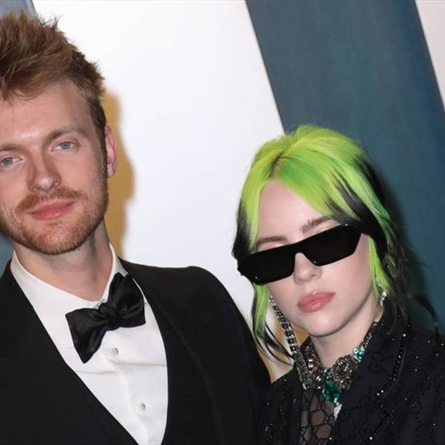

Cantor, compositor, produtor musical e ator que recebeu oito prêmios Grammy, incluindo Produtor do Ano, por seu trabalho no primeiro álbum da sua irmã mais nova, Billie Eilish. Ele é o vocalista da banda The Slightlys.
Seu primeiro papel no cinema foi na comédia Professora Sem Classe, de 2011.
Ele fez uma aparição em um episódio de Modern Family, em 2013, e chamou a atenção ao interpretar Alistair na temporada final de Glee.
Nascido em Los Angeles, Califórnia, seus pais são os atores Patrick O'Connell e Maggie Baird. Ele começou a namorar a YouTuber Claudia Sulewski no final de 2018. Eles têm um cachorro chamado Peaches, que aparece com frequência em suas contas em redes sociais.